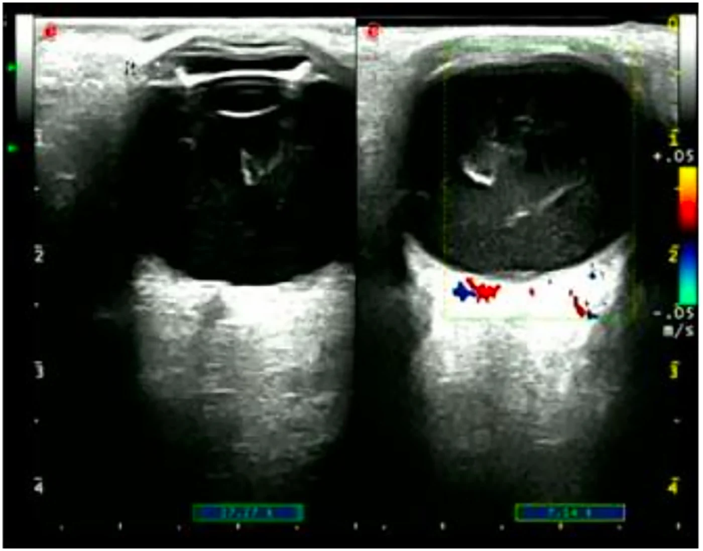
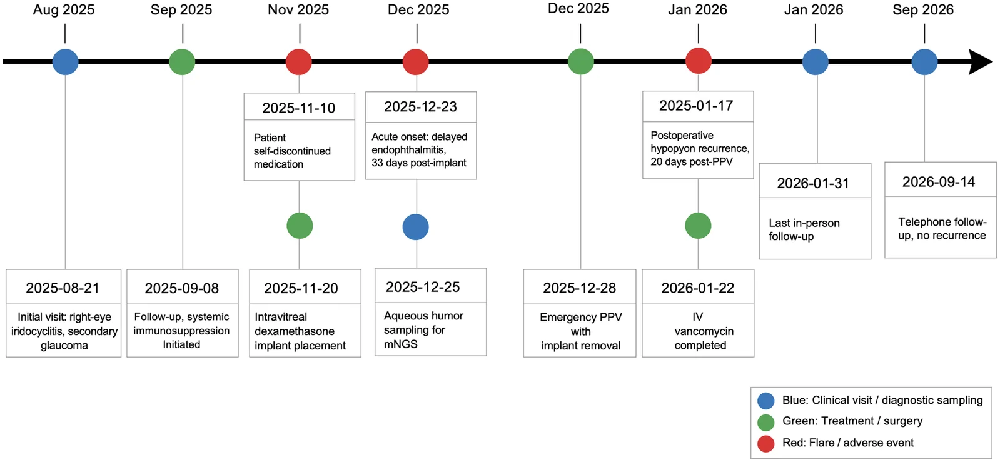
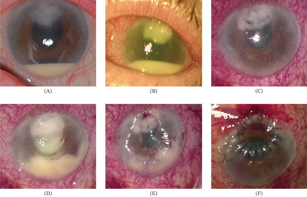
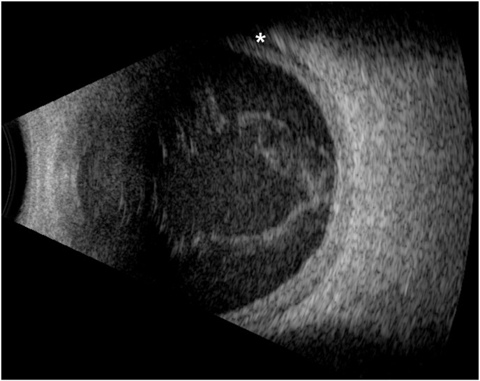

1426 — Viêm nội nhãn sau tiêm nội nhãn tái phát hoặc không đáp ứng / Recurrent and refractory post-injection endophthalmitis
Tags: pattern:viem-noi-nhan pattern:mu-tien-phong pattern:viem-dich-kinh pattern:tai-phat pattern:khong-dap-ung vung:nhan-cau vung:tien-phong vung:dich-kinh vung:the-thuy-tinh protocol:B-scan protocol:PPV protocol:cay-vi-sinh protocol:mNGS score:EVS
Mức chắc chắn (certainty): tổng hợp y văn (literature synthesis) — đọc toàn văn 6 bài mở 2022–2026 qua Europe PMC/PMC, trong đó 3 ca nguyên văn (verbatim case) có ảnh dùng cho Blind Quiz. Phần phân tầng "chọc lại hay mổ lại" là suy luận (inference) từ cơ chế nhiễm trùng và các đoàn hệ quan sát, ghi rõ tại chỗ: không có thử nghiệm ngẫu nhiên nào trả lời câu hỏi này.
1. Tổng quan bệnh học – cơ chế hình ảnh
1.1. Vì sao viêm nội nhãn sau tiêm "tái phát" chứ không phải "khỏi rồi mắc lại"
- Ổ nhiễm kín (sequestered nidus): mủ và fibrin đông trong dịch kính dạng gel tạo khoang kín — kháng sinh tiêm vào khuyếch tán kém vào khối fibrin, nên nồng độ diệt khuẩn tại ổ thấp dù nồng độ trong dịch kính tự do đủ. Đây là lý do cắt dịch kính (PPV) vừa lấy mẫu vừa mở khoang mủ.
- Màng sinh học (biofilm) trên vật liệu: implant dexamethasone (Ozurdex) và thể thủy tinh nhân tạo (IOL) là giá thể cho Staphylococcus coagulase âm bám và tạo biofilm — kháng sinh không diệt được vi khuẩn trong biofilm; không lấy implant thì ổ nhiễm tồn tại. Ca nguyên văn: viêm nội nhãn 33 ngày sau implant, tái phát mủ 20 ngày sau PPV đã lấy implant — chứng tỏ màng sinh học có thể còn trên bao thể thủy tinh/vỏ bao sau.
- Đáp ứng viêm tự duy trì: fibrin, mảnh võng mạc hoại tử và protein của thuốc tiếp tục kích thích bạch cầu; mủ tiền phòng quay lại không đồng nghĩa vi khuẩn còn sống (xem 1.3).
- Vì sao khởi phát muộn với implant: kim 22G của implant lớn hơn kim anti-VEGF (30–32G) → vết thương rộng hơn, cộng ức chế miễn dịch tại chỗ của corticoid → vi khuẩn ít gây viêm cấp, biểu hiện sau 4–12 tuần. Tần suất: implant dexamethasone 0,125% (15/11.954) so với anti-VEGF 0,033% (106/318.618), RR 3,77 (2,20–6,47), p = 2,29 × 10⁻⁷.
1.2. Vì sao "không đáp ứng" là một thực thể riêng, không phải "nhiễm trùng nặng hơn"
- Sau chọc–tiêm kháng sinh, phản ứng viêm đỉnh ở 24–48 giờ rồi phải giảm dần. Không giảm (hoặc nặng lên) sau 48–72 giờ = kiểm soát ổ nhiễm thất bại, do 4 khả năng: ổ kín chưa mở, vi khuẩn kháng vancomycin, nấm, hoặc chẩn đoán không phải nhiễm khuẩn.
- Số liệu định lượng:
- Loạt 13 ca sau tiêm tại một trung tâm: 85% (11/13) phải PPV trong 24 giờ, 64% (7/11) đặt dầu silicone — cho thấy tỷ lệ "không đáp ứng chọc–tiêm" rất cao khi chỉ định mổ được đặt sớm.
- Đoàn hệ 125 ca đa nguyên nhân: 40,8% chọc–tiêm đơn thuần, 25% PPV ngay, 34,2% chọc–tiêm rồi PPV trong 7 ngày; thị lực cuối không khác nhau giữa 3 nhóm, nhưng nhóm chọc–tiêm → PPV phục hồi thị lực CHẬM hơn.
- Vi khuẩn gram dương kháng vancomycin: 14/126 (11,1%) ca cấy dương tại Ấn Độ; 100% đa kháng ≥ 3 nhóm; thị lực cuối ≥ 20/200 chỉ 50% (7/14).
- Vì sao cấy lần hai thường âm: bệnh nhân đã dùng kháng sinh (làm giảm độ nhạy Gram/cấy), thể tích mẫu 0,1–0,2 mL, vi khuẩn trong biofilm khó mọc. Vì vậy cấy âm lần hai KHÔNG loại trừ nhiễm — ca nguyên văn dùng mNGS dịch tiền phòng mới ra S. epidermidis 24.904 reads (99,96%), trong khi cấy thường âm.
1.3. Vì sao hình ảnh không phân biệt được "nhiễm còn sống" với "viêm tồn dư"
| Hiện tượng | Bản chất mô – vật lý | Dấu hiệu trên hình ảnh |
|---|---|---|
| Mủ tiền phòng (hypopyon) | Bạch cầu + fibrin lắng theo trọng lực | Đèn khe: mức ngang vàng ở đáy tiền phòng; không phân biệt vô khuẩn/nhiễm |
| Viêm dịch kính | Tế bào + fibrin làm tăng trở kháng âm trong dịch kính đồng nhất | B-scan: đốm và màng tăng hồi âm, dày màng dịch kính sau |
| Màng xơ – co kéo | Fibrin tổ chức hóa, không có mạch | B-scan: dải dày, di động kém; Doppler màu không có dòng (khác bong võng mạc có dòng) |
| Bong hắc mạc | Thấm dịch qua màng Bruch bị viêm | B-scan: vòm hắc mạc dày, trơn, có thể kèm dịch dưới bao Tenon |
| Bong võng mạc | Co kéo + viêm | Màng mỏng, di động mạnh, dính vào đĩa thị; 8% ca viêm nội nhãn sau tiêm có bong võng mạc |
- Vì sao OCT chỉ dùng khi môi trường trong: tế bào viêm tán xạ ánh sáng → tín hiệu không tới võng mạc; khi trong, OCT thấy đốm tăng phản xạ dịch kính và phù hoàng điểm.
- Vì sao MRI/CT không thường quy: tổn thương nằm trong vài mL dịch kính, dưới ngưỡng phân giải; chỉ dùng khi nghi viêm mô tế bào/áp-xe hốc mắt hoặc ổ nhiễm nội sinh.

(A) B-mode: đục dịch kính dạng màng + đốm, dày thành sau; (B) Doppler màu: dòng chỉ ở thành củng mạc/hắc mạc, không có dòng trong khối mủ — khác bong võng mạc. Nguồn: PMC13683054 Figure 2, CC BY 4.0.2. Mẫu hình + chẩn đoán phân biệt theo diễn tiến (gamut)
Mẫu hình chốt: mắt đã được chọc–tiêm kháng sinh (hoặc PPV) vì viêm nội nhãn, nay mủ/viêm dịch kính quay lại hoặc không giảm. Gamut xếp theo mốc thời gian so với lần điều trị đầu — biến số mạnh hơn hình thái:
- 0–48 giờ, không cải thiện: ổ kín chưa mở (mủ fibrin), vi khuẩn kháng vancomycin (Enterococcus, VRSA), gram âm kháng ceftazidime, hoặc chẩn đoán sai (viêm màng bồ đào bùng phát).
- 48 giờ–2 tuần, cải thiện rồi xấu lại: biofilm trên IOL/implant/vỏ bao, mảnh hoại tử còn sót, áp-xe dịch kính khu trú.
- 2–12 tuần, khởi phát muộn: implant dexamethasone (kim 22G, lớn hơn 30–32G của anti-VEGF), Cutibacterium acnes, nấm (Candida, Aspergillus).
- Hàng tháng–hàng năm, "mắc lại": đợt nhiễm mới do tiêm lại — 1,5% (8/535) bệnh nhân có tiền sử viêm nội nhãn bị đợt thứ hai sau khi đã hết viêm hoàn toàn; ca nguyên văn thứ hai cách 2 năm, cùng mắt, sau aflibercept.
- Bệnh cảnh giả (masquerade): bùng phát viêm màng bồ đào, u lympho nội nhãn, hoại tử u, dị vật/mảnh thể thủy tinh — không đau nhiều, không đáp ứng kháng sinh, tái diễn cùng kiểu.
Gamut theo tác nhân (loạt lớn): cấy dương 56–63%; S. epidermidis 24%, S. aureus 11%, liên cầu 10,5%, gram âm 7,9%, nấm 4,4%; 37–44% cấy âm. Streptococcus là nhóm khởi phát < 48 giờ, mủ đặc, tiên lượng xấu nhất.
3. Bảng so sánh phân biệt (ma trận đối chiếu)
| Thực thể (entity) | Hình ảnh điển hình | Chốt vào (rule-in) | Chốt loại (rule-out) | Gợi ý xác nhận |
|---|---|---|---|---|
| Nhiễm khuẩn tồn tại do ổ kín | Mủ tiền phòng dai dẳng + màng/dải fibrin trong dịch kính trên B-scan | Không giảm sau 48–72 giờ + mủ đặc + đau tăng + cấy lần đầu dương | Mủ mỏng, đau giảm dần, cấy âm → nghĩ viêm tồn dư | PPV + làm lại cấy; B-scan trước/sau |
| Kháng vancomycin (VRE/VRSA) | Không khác hình thái; mủ quay lại sau khi đã lấy mủ | Cấy dương gram dương + kháng vancomycin (MIC); tiền sử dùng vancomycin nội nhãn/dự phòng | Đáp ứng rõ sau vancomycin 48 giờ → ít nghĩ kháng | Kháng sinh đồ; linezolid/daptomycin nội nhãn theo ca |
| Biofilm trên implant/IOL | Viêm khu trú quanh implant/vỏ bao, mủ tái phát nhiều tuần | Implant/IOL còn tại chỗ + tái phát cùng kiểu; mNGS/PCR dương | Không có vật liệu, một đợt duy nhất → không phải biofilm | Lấy implant; PPV + cắt bao sau |
| Nấm (Candida/Aspergillus) | Viêm khu trú, "fluff ball", đốm rời trên B-scan; tiến triển chậm | > 2 tuần + tổn thương khu trú + yếu tố nguy cơ | Khởi phát < 72 giờ, mủ lan tỏa → nghĩ vi khuẩn | Cấy nấm, β-D-glucan; amphotericin B 5 µg/0,1 mL |
| Viêm vô khuẩn/độc | Mủ mỏng, đau ít, đục dịch kính lan tỏa đối xứng | 24–48 giờ + cấy âm + giảm nhanh với corticoid | Mủ đặc + đau tăng + tái phát sau PPV → không phải vô khuẩn | Theo dõi 24–48 giờ; loại trừ nhiễm trước |
| Masquerade (uviêm/u lympho) | Viêm tiền phòng ± dịch kính, không mủ đặc, có thể hai bên | Tiền sử uviêm/u lympho + tái diễn cùng kiểu + cấy âm nhiều lần | Mủ mới + đau + một bên sau tiêm → không phải masquerade | Tế bào học dịch kính; đáp ứng corticoid |
4. Protocol chụp + phân tầng xử trí
4.1. Protocol hình ảnh
- Đèn khe + soi đáy mắt mỗi lần khám: ghi chiều cao mủ (mm), tế bào tiền phòng, fibrin, phản ứng mống mắt.
- B-scan 10–15 MHz BẮT BUỘC khi không soi được đáy mắt: quét kinh trục + ngang + dọc, gain cao ~90 dB để thấy hyaloid rồi giảm ~65 dB để phân biệt màng; Doppler màu phân biệt màng xơ (không dòng) với bong võng mạc (có dòng).
- Đo và ghi: màng dịch kính, bong võng mạc, bong hắc mạc, dày củng mạc sau, dịch dưới bao Tenon.
- OCT khi môi trường trong (đốm dịch kính, phù hoàng điểm); UBM khi cần đánh giá tiền phòng/góc.
- CT/MRI hốc mắt chỉ khi nghi viêm mô tế bào/áp-xe hốc mắt; loại trừ dị vật kim loại trước MRI.
4.2. Phân tầng: chọc lại hay mổ lại
- Mốc đánh giá: 24 giờ và 48–72 giờ. Đáp ứng = đau giảm, mủ giảm, viêm dịch kính giảm.
- Chỉ định PPV (mổ lại/CEVE): thị lực LP hoặc kém hơn; không cải thiện sau 48–72 giờ; mủ tăng; B-scan có màng/mủ tổ chức hóa; implant/IOL còn nghi biofilm.
- Chọc lại (second tap) chỉ khi: chẩn đoán còn nghi ngờ (lần đầu lấy mẫu sau kháng sinh), nghi nấm, hoặc cần kháng sinh đồ để đổi thuốc — không chọc lại "theo lịch" vì độ nhạy cấy lần hai rất thấp và chọc vào mắt đang viêm có nguy cơ bong võng mạc.
- Liều nội nhãn kinh điển: vancomycin 1 mg/0,1 mL + ceftazidime 2,25 mg/0,1 mL; moxifloxacin 500 µg/0,1 mL; amphotericin B 5 µg/0,1 mL (nấm); cefuroxime 1 mg/0,1 mL.
- Kháng vancomycin (ca/loạt nhỏ): linezolid 1 mg/0,1 mL hoặc daptomycin 200 µg/0,1 mL (an toàn trên mô hình thỏ) — không có khuyến cáo chính thức, phải có kháng sinh đồ và PPV.
- Corticoid nội nhãn: không dùng thường quy. Gộp 265 mắt (126 dexamethasone + kháng sinh vs 139 kháng sinh đơn thuần): không lợi ích thị lực; thời gian bán thải dexamethasone ~5,5 giờ nên không thể "dập" viêm kéo dài. Nếu dùng, không thay thế kiểm soát ổ nhiễm.
- Bỏ mắt (evisceration/enucleation): đau không kiểm soát, NLP + teo nhãn cầu, thủng/mủ giác mạc lan. 66 mắt do học viên mổ: 98% lắp được mắt giả; evisceration trong panophthalmitis có nguy cơ lộ/thải implant cao (aOR 38,38) → cân nhắc enucleation.
flowchart TD
A["Viêm nội nhãn đã chọc-tiêm (hoặc PPV)"] --> B["Khám lại 24 giờ: mủ, đau, thị lực"]
B --> C{"Cải thiện?"}
C -->|"Có"| D["Theo dõi 48-72 giờ, B-scan lại"]
C -->|"Không"| E{"Thị lực LP hoặc kém hơn?"}
E -->|"Có"| F["PPV/CEVE + kháng sinh nội nhãn + lấy mẫu"]
E -->|"Không"| G{"Còn nghi nấm / cần kháng sinh đồ?"}
G -->|"Có"| H["Chọc lại 0,1-0,2 mL + cấy/PCR/mNGS"]
G -->|"Không"| F
H --> I{"48 giờ sau chọc lại"}
I -->|"Xấu đi"| F
I -->|"Cải thiện"| D
F --> J{"Implant/IOL nghi biofilm?"}
J -->|"Có"| K["Lấy implant / cắt bao sau"]
J -->|"Không"| L["Kháng sinh theo kháng sinh đồ"]
4.3. Ngưỡng "thất bại điều trị" dùng để ghi hồ sơ
- Thất bại vi sinh: cấy/PCR còn dương sau 7 ngày kháng sinh phù hợp.
- Thất bại lâm sàng: mủ không giảm sau 72 giờ hoặc tái phát sau khi đã hết.
- Thất bại giải phẫu: bong võng mạc, teo nhãn cầu, mất cảm giác sáng.
5. Biến thể bình thường và cạm bẫy
- Cấy âm không loại trừ nhiễm: 37–44% ca cấy âm; cấy lần hai còn thấp hơn. Quyết định dựa diễn tiến lâm sàng + B-scan.
- B-scan không phân biệt vô khuẩn/nhiễm: cùng hình "đục dịch kính"; thời gian + mức đau + đáp ứng điều trị mới là chốt.
- Mủ tiền phòng giả: tinh thể cholesterol, tế bào u, vật liệu silicone/triamcinolone — không đau, không viêm dịch kính.
- Không bỏ sót bong võng mạc: 8% ca viêm nội nhãn có bong võng mạc; B-scan trước và sau mỗi lần tiêm/mổ.
- Implant dexamethasone: viêm nội nhãn có thể xuất hiện 33 ngày sau tiêm và tái phát sau PPV đã lấy implant — phải theo dõi dài, không coi "lấy implant là xong".
- Độc tính vancomycin: lặp liều dày có thể gây hoại tử võng mạc/thiếu máu; khoảng cách và liều phải theo nồng độ – thời gian bán thải, không tiêm nhắc mù.
- "Satisfaction of search": đau mắt sau tiêm còn do trầy giác mạc, tăng nhãn áp cấp, loét giác mạc, viêm củng mạc — khám đèn khe đủ trước khi kết luận.
6. Tự lượng giá — Blind Quiz
Ca 1 — Nam 51 tuổi, uviêm trước tiêm tái diễn, tiêm implant dexamethasone 0,7 mg; 33 ngày sau đau, mủ tiền phòng; đã PPV lấy implant và dùng kháng sinh toàn thân.

- Gợi ý: nhìn các mốc đỏ (biến cố) và xanh (điều trị).
- Câu hỏi: biến cố nào xảy ra 20 ngày sau PPV? Vì sao "đã lấy implant" mà vẫn tái phát? Hai xét nghiệm nào giúp tìm tác nhân khi cấy âm?
Bấm để hiện đáp án (findings + chẩn đoán)
- Dấu hiệu: dòng thời gian ghi 23/12/2025 viêm nội nhãn khởi phát muộn 33 ngày sau implant; 28/12 PPV khẩn lấy implant; 17/01/2026 mủ tiền phòng tái phát 20 ngày sau PPV.
- Chẩn đoán: viêm nội nhãn nhiễm khuẩn tái phát sau PPV do S. epidermidis — mNGS dịch tiền phòng 24.904 reads (99,96%), không gen kháng; thị lực cuối 20/33.
- Vì sao tái phát: biofilm/ổ fibrin còn trên vỏ bao sau dù đã lấy implant; kháng sinh không thấm vào màng sinh học → cần PPV + cắt bao sau, không chỉ lấy implant.
- Nguồn ảnh: Frontiers in Medicine 2026; Figure 4 — PMC13683054, CC BY 4.0.
Ca 2 — Bệnh nhân sau mổ đục thể thủy tinh, viêm nội nhãn do Staphylococcus hominis kháng vancomycin (không đáp ứng chọc–tiêm).

- Gợi ý: (A) vào viện; (B) sau khi tăng kháng sinh; (C–E) diễn tiến; (F) sau ghép giác mạc.
- Câu hỏi: dấu hiệu nào cho thấy kiểm soát ổ nhiễm thất bại? Khi nào phải ghép giác mạc tạm (tectonic)?
Bấm để hiện đáp án (findings + chẩn đoán)
- Dấu hiệu: (A) thâm nhiễm vết mổ + mủ tiền phòng + phù mô đệm; (B) mủ tăng dù đổi kháng sinh → không đáp ứng; (C–E) mủ đặc, thâm nhiễm lan, mô giác mạc mỏng đi; (F) sau ghép giác mạc tectonic — giác mạc trong, mủ hết.
- Chẩn đoán: viêm nội nhãn do S. hominis kháng vancomycin, có biến chứng giác mạc — phải PPV + kháng sinh theo kháng sinh đồ (linezolid/daptomycin) và ghép giác mạc để cứu nhãn cầu.
- Vì sao không chờ: mủ tăng sau 48 giờ + thâm nhiễm giác mạc = nguy cơ thủng; chờ thêm là mất mắt.
- Nguồn ảnh: Case Reports in Ophthalmological Medicine 2026; Figure 2 — PMC13338094, CC BY 4.0.
Ca 3 — Nam 83 tuổi, 1 ngày sau tiêm aflibercept 2 mg: đau, thị lực cảm giác sáng; B-scan dưới đây.

- Gợi ý: chú ý mũi tên (màng trong dịch kính) và dấu hoa thị (khoang dưới hắc mạc).
- Câu hỏi: hai dấu hiệu trên B-scan là gì? Vì sao vẫn phải mổ dù chọc–tiêm đã làm ngay?
Bấm để hiện đáp án (findings + chẩn đoán)
- Dấu hiệu: đục dịch kính + màng fibrin (mũi tên) và bong hắc mạc nông (hoa thị); không thấy bong võng mạc.
- Chẩn đoán: viêm nội nhãn nhiễm khuẩn sau tiêm — bệnh nhân được chọc–tiêm vancomycin + ceftazidime + dexamethasone, nhưng thị lực vẫn LP và không cải thiện sau 1 ngày → PPV + bóc màng hyaloid, tiêm lại kháng sinh; 2 năm sau có đợt thứ hai sau aflibercept 8 mg, thị lực cuối 20/50.
- Vì sao mổ: LP + màng fibrin tổ chức hóa + bong hắc mạc = ổ kín, kháng sinh không tới; EVS chỉ định PPV khi LP, và không cải thiện sau 24 giờ củng cố chỉ định.
- Nguồn ảnh: American Journal of Ophthalmology Case Reports 2026; Fig. 1 — PMC12914102, CC BY 4.0.
Bài liên quan chéo
- 1425 – Viêm nội nhãn sau tiêm nội nhãn: chẩn đoán và phân tầng lần đầu
- 1433 – Viêm nội nhãn ở mắt bơm dầu silicone: cấy dầu–dịch, lấy dầu hay giữ
- 495 – Viêm nội nhãn do nấm ngoại sinh sau mổ/tiêm vs TASS
- 475 – Viêm nội nhãn nội sinh do vi khuẩn
- 492 – Sinh thiết hắc–võng mạc & lấy mẫu dịch kính
- 411 – Siêu âm nhãn cầu
- 400 – Tổng quan Mắt & thị giác
Ảnh
1426_viem-noi-nhan-tai-phat_Timeline_PMC13683054.webp— Frontiers in Medicine 2026, Figure 4, CC BY 4.0.1426_viem-noi-nhan-tai-phat_AnteriorSegment_PMC13338094.jpg— Case Reports in Ophthalmological Medicine 2026, Figure 2, CC BY 4.0.1426_viem-noi-nhan-tai-phat_Bscan_PMC12914102.jpg— American Journal of Ophthalmology Case Reports 2026, Fig. 1, CC BY 4.0.1426_viem-noi-nhan-tai-phat_Bscan-Doppler_PMC13683054.webp— Frontiers in Medicine 2026, Figure 2, CC BY 4.0.- Nguồn + giấy phép từng ảnh:
images/CREDITS.md; link bài gốc:sources.md.
Không dùng để chẩn đoán độc lập khi chưa có người hướng dẫn.